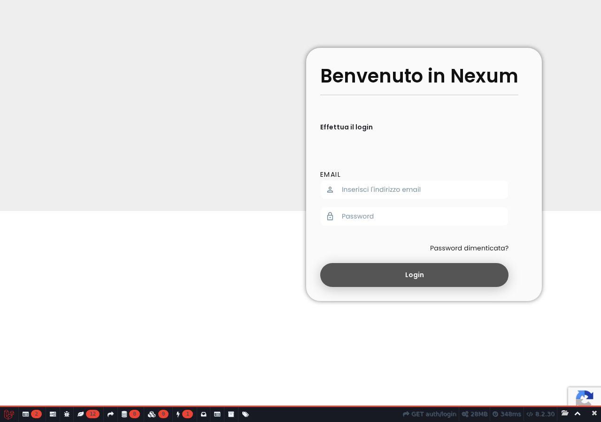
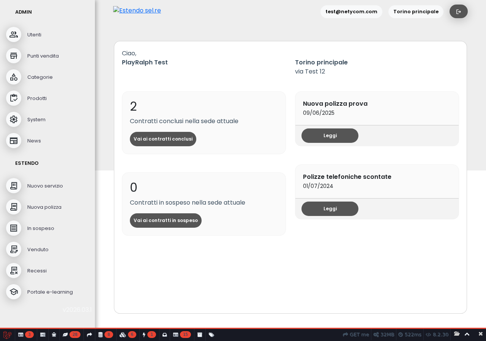
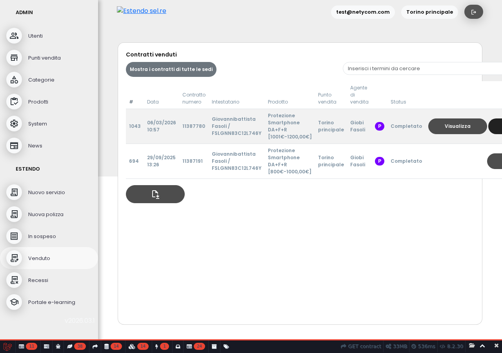
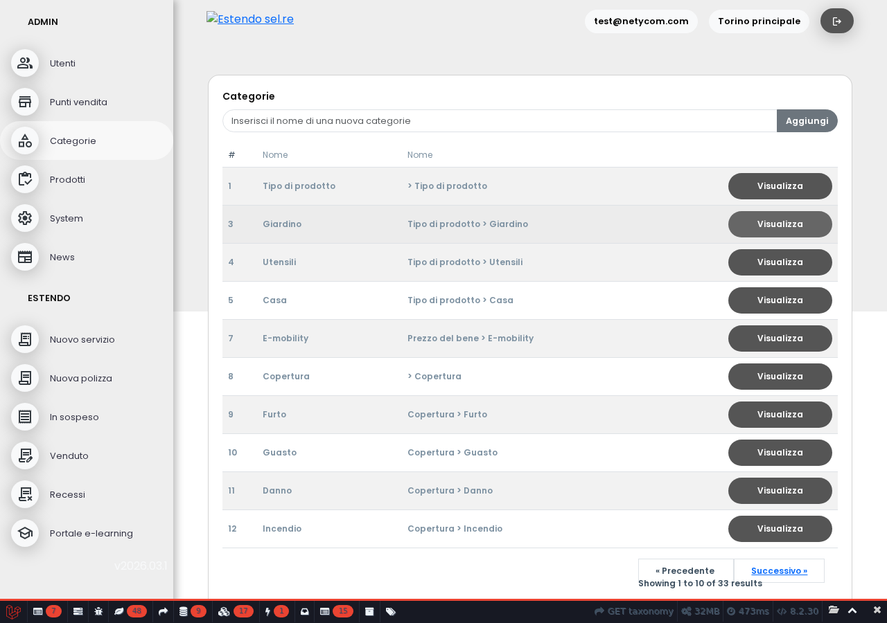
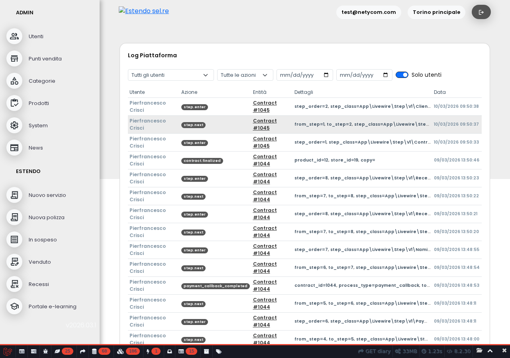

Tutte e 4 le issue in programma (#135 tema grigio, #121 categorie, #120 visualizza contratto, #124 cron marche/modelli) sono presenti e funzionanti. Login, navigazione, lista contratti e performance nella norma. Unica nota: la route /contract/{id} non ha un vincolo numerico, quindi URL con stringhe al posto dell'ID producono un errore 500 invece di un 404. Non impatta gli utenti reali.
Tema grafico aggiornato (#135)
La piattaforma ora utilizza una palette in scala di grigi, più professionale e neutrale. Il logo Estendo è visibile e dimensionato correttamente. La barra laterale, i bottoni e l'intestazione seguono tutti il nuovo tema.

Pagina di accesso — tema grigio applicato
Accesso e navigazione funzionanti
L'accesso alla piattaforma avviene correttamente. La dashboard mostra il riepilogo contratti, la barra laterale ha tutte le voci di menu previste e la versione è aggiornata (v2026.03.1).

Dashboard — 12 voci di menu, versione 2026.03.1
Contratti visibili e consultabili (#120)
La lista contratti si carica correttamente e mostra i dati di ogni vendita. Cliccando su un contratto si apre la scheda dettaglio con tutti i campi previsti.

Lista contratti venduti — tabella con dati completi
Categorie prodotti funzionanti (#121)
La sezione Categorie mostra l'elenco completo (33 categorie) con la struttura gerarchica (tipo di prodotto, copertura, ecc.). La paginazione e il bottone “Aggiungi” sono presenti.

Categorie — 33 voci con gerarchia
Registro attività (#28)
La sezione “Log piattaforma” nel menu System si carica correttamente e mostra lo storico delle operazioni effettuate.

Registro attività della piattaforma
Aggiornamento automatico marche e modelli (#124)
Il processo automatico di sincronizzazione marche e modelli dall'archivio Estendo è configurato per eseguirsi ogni notte alle 02:00. Dopo il deploy in produzione, il primo aggiornamento avverrà nella notte successiva.
⚠️ Route contract/{id} accetta stringhe (es. /contract/create)
causa TypeError su ContractView::$id
Impatto: nullo per utenti reali, solo URL manuali
Suggerimento: aggiungere ->whereNumber('id')
⚠️ bootstrap/cache non era in git — fixato con .gitignore locale
Commit: b4a2294
⚠️ env() usato in blade (head-style) incompatibile con config:cache
Workaround: config:clear applicato
Fix definitivo: spostare colori in config/domain.php (backlog)